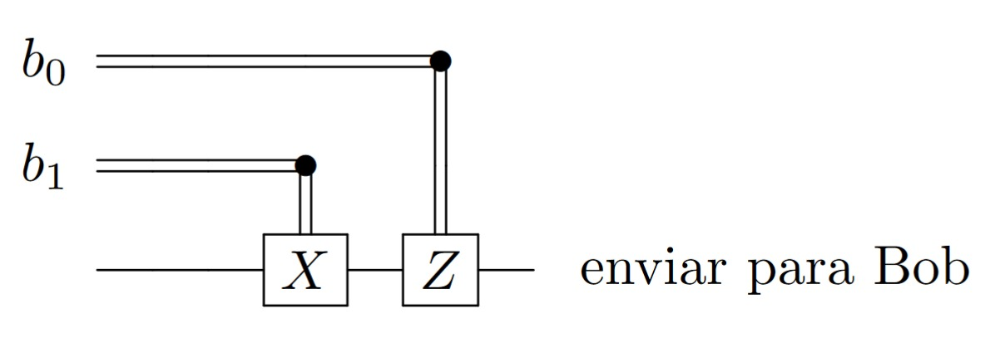
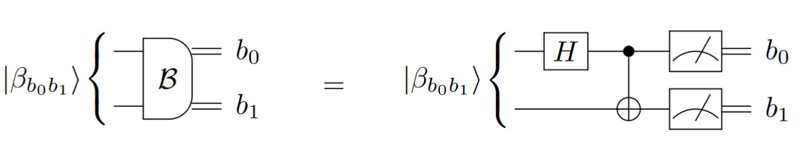
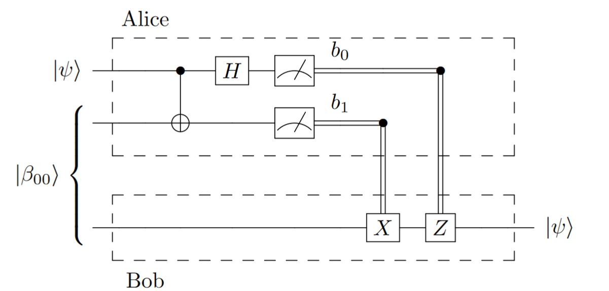
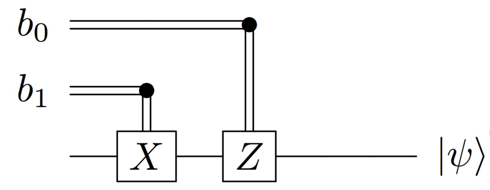

Algoritmos Quânticos#
Nota
Material extraído do TCC Computação Quântica: Uma abordagem para estudantes de graduação em Ciências Exatas, de Giovani Goraiebe Pollachini.
Neste capítulo serão abordados de uma maneira didática como entender algoritmos quânticos, ler circuitos quânticos e alguns protocolos e algoritmos quânticos conhecidos na literatura. Quando possível, é feita uma comparação com os algoritmos clássicos conhecidos.
Como ler um algoritmo quântico#
A leitura de algoritmos quânticos requer uma abordagem diferente daquela utilizada para algoritmos clássicos. Enquanto algoritmos clássicos são tipicamente descritos através de sequências de operações bem definidas sobre bits, os algoritmos quânticos envolvem operações sobre qubits que exploram propriedades como superposição e emaranhamento.
Elementos fundamentais para compreensão#
Para compreender bem o funcionamento de um algoritmo quântica é necessário compreender alguns elementos fundamentais para a computação quântica, sendo eles:
Notação de Dirac: Os estados quânticos são representados usando a notação bra-ket (⟨| e |⟩), onde |0⟩ e |1⟩ representam os estados base.
Portas quânticas: Operações unitárias que transformam os estados dos qubits. Cada porta representa uma matriz unitária que atua sobre o vetor de estado.
Evolução temporal: O sistema evolui deterministicamente através de operações unitárias até o momento da medição.
Medição: O ponto onde a informação quântica é convertida em informação clássica, colapsando o estado para um dos estados da base.
Estratégia de leitura#
Identifique os registros: Separe mentalmente os qubits de entrada, saída e possíveis qubits auxiliares.
Siga a evolução temporal: Leia o circuito da esquerda para a direita, acompanhando como cada operação modifica o estado.
Verifique a unitariedade: Certifique-se de que as operações preservam a norma do vetor de estado.
Analise antes e depois da medição: Compreenda quais informações são acessíveis antes da medição (em superposição) e depois (resultados clássicos).
Nota
No começo, é recomendado abrir os cálculos de matrizes na mão, independente da dificuldade deles, para estruturar noções fundamentais que será exigidas em algorítmos mais complexos.
A abordagem mais eficaz é através da análise metódica de exemplos progressivos:
Inicie com circuitos fundamentais como codificação superdensa e teletransporte
Acompanhe detalhadamente a evolução matemática do estado em cada etapa
Calcule explicitamente como cada operação unitária modifica as amplitudes
Identifique os pontos onde o emaranhamento emerge entre os qubits
Compreenda como essas correlações quânticas são exploradas para alcançar vantagens computacionais
Entendendo um circuito#
Os circuitos quânticos são a principal ferramenta visual para representar algoritmos quânticos. Eles funcionam como mapas que guiam o funcionamento do algorítmo, transformando operações matemáticas em diagramas intuitivos que podemos seguir passo a passo.
A estrutura básica de um circuito#
Um circuito quântico é lido sempre da esquerda para a direita, representando a evolução temporal do sistema. As linhas horizontais correspondem aos qubits individuais, enquanto os símbolos colocados sobre essas linhas (caixinhas, pontos e outros símbolos) representam as operações sendo aplicadas. Essa representação temporal é crucial para entender a sequência lógica das operações e como a informação quântica flui através do sistema.
Elementos fundamentais de um circuito quântico#
Linhas de qubit: Cada linha horizontal representa a linha do tempo de um qubit específico, mostrando seu estado desde a inicialização até a medição final
Portas quânticas: São operações unitárias que transformam o estado dos qubits, representadas por símbolos como H (Hadamard), X, Y, Z, entre outros
Operações controladas: Indicam que uma operação em um qubit depende do estado de outro qubit, criando correlações quânticas, geralmente são linhas saíndo de um qubit (qubit de controle) para outro com uma operação (qubit alvo).
Medições: Representam o momento onde a informação quântica é convertida em bits clássicos que podemos ler e interpretar
Exemplo de circuito#
Para entendermos melhor como ler um circuito quânticos, utilizaremos de exemplo o seguinte circuito de 2 qubits:

Nesse circuito, notamos de início a presença de dois bits quânticos (linhas), e dois bits clássicos que receberão as informações quânticas após a medição (3ª linha).
Lendo o circuito:
O qubit \(q_0\) é colocado em superposição pelo uso de uma porta Hadamard (caixa com H);
Uma porta controlada (linha que conecta os dois qubits) é aplicada, representando, nesse caso, que, caso o qubit \(q_0\) tenha valor 1 (ponto no qubit \(q_0\)), a porta quântica \(X\) é aplicada no qubit \(q_1\);
A medição (caixa com símbolo de medidor) é realizada e a superposição quântica é quebrada.
Codificação superdensa#
A codificação superdensa é um protocolo que envolve duas partes, Alice e Bob, que queiram se comunicar trocando bits. Alice quer enviar bits de mensagem para Bob.
Nota
Em Teoria da Informação e Criptografia Quântica, é uma convenção tácita rotular os dois lados da comunicação por Alice e Bob!
Não é possível, classicamente, codificar 2 bits de mensagem em 1 bit transmitido, já que só há 2¹ = 2 palavras código – as palavras 0 e 1 – e 2² = 4 palavras de mensagem que podem ser enviadas – as palavras 00, 01, 10 e 11. No entanto, é possível codificar 2 bits de mensagem em 1 qubit transmitido, e é essa a função do circuito de codificação superdensa.
Uma referância para este conteúdo é [NC10] seção 2.3, p. 97-98
Visão geral#
A codificação superdensa envolve o compartilhamento prévio de um par de qubits emaranhados, no estado de Bell \(\ket{\beta_{00}}= \frac{\ket{00}+\ket{11}}{\sqrt{2}}\). Esse estado independe da mensagem que Alice quer enviar a Bob, e pode ter sido distribuído por uma fonte externa de pares emaranhados.
Assim, o primeiro qubit está com Alice e o segundo, com Bob. Alice pode realizar operações em seu qubit em função dos bits de mensagem que ela quer enviar. Após as operações, ela envia seu qubit a Bob, que passa a estar em posse dos dois qubits. Bob pode medí-los de maneira a obter os bits de mensagem.
Circuito#
O circuito completo para a codificação superdensa é representado abaixo. Seu funcionamento detalhado será abordado a seguir.

Funcionamento detalhado#
Setup
Num primeiro momento, Alice e Bob compartilham o estado de Bell $\( \ket{\beta_{00}} = \frac{\ket{00} + \ket{11}}{\sqrt{2}} \)$
Usamos os rótulos \(A\) para o primeiro qubit (da Alice) e \(B\) para o segundo qubit (que está com Bob).
Codificação - Alice
Alice conseguirá 4 estados da base de Bell distintos em função dos bits de mensagem.
Observa-se que \(ZX = iY\) pela identidade de circuitos. Os estados de Bell \(\ket{\beta_{00}}\), \(\ket{\beta_{01}}\), \(\ket{\beta_{10}}\) e \(\ket{\beta_{11}}\) formam uma base para o espaço de 2 qubits. Observa-se também que, se a mensagem é \(b_0 b_1\), então quando \(b_1 = 1\) aplica-se \(X_A\) e quando \(b_0 = 1\), aplica-se \(Z_A\). Dessa forma, para todos os valores da mensagem \(b_0 b_1\), pode-se escrever a operação no qubit \(A\) por \(Z_A^{\,\, b_0} X_A^{\,\, b_1}\). Portanto, a operação que Alice deve fazer em seu qubit pode ser representada pelo seguinte circuito controlado por cbits:

Decodificação - Bob
Alice envia, então, seu qubit a Bob, que realiza uma medida na base de Bell. Bob consegue distinguir em qual estado o par de qubits se encontra com essa medida, e, consequentemente, consegue saber quais bits de mensagem foram enviados: se o resultado for \(\ket{\beta_{b_0b_1}}\), então a mensagem é \(b_0 b_1\).
A medição na base de Bell pode ser realizada em função da medição na base computacional pelo seguinte circuito:

Circuito de teletransporte#
O circuito de teletransporte também envolve duas partes, chamadas de Alice e Bob, como de costume. Dessa vez, Alice está em posse de um qubit \(\ket{\psi}\) cujo estado lhe é desconhecido e precisa enviá-lo a Bob. No entanto, o único meio de comunicação entre os dois é um canal clássico, por onde só é possível enviar cbits. Pode-se pensar em uma linha telefônica, ou uma conexão de internet entre os dois, por exemplo, e que os dois estão a uma grande distância um do outro. Enviando apenas bits clássicos, Alice deve tentar enviar o estado de seu qubit a Bob.
Aparentemente não seria possível realizar essa tarefa, pois o estado de um qubit \(\ket{\psi} = a\ket{0} + b \ket{1}\) é definido por dois números complexos \(a\) e \(b\), que demandariam muitos bits para serem representados de maneira satisfatória (mas aproximada apenas). Além disso, Alice não tem conhecimento sobre o estado do seu qubit, e uma medida não seria suficiente para conseguir encontrar os coeficientes \(a\) e \(b\). Seriam necessárias muitas medidas de cópias do sistema em bases diferentes para se conseguir obter estimativas das probabilidades de o resultado ser \(\ket{0}\) ou \(\ket{1}\), e isso não é possível de se fazer quando não se tem cópias do sistema.
No entanto, se Alice e Bob estiverem compartilhando um par de qubits emaranhados, a situação torna-se mais favorável. O par emaranhado \( \ket{\beta_{00}} \) pode ter sido distribuído previamente, e não depende do qubit \(\ket{\psi}\) de Alice. O circuito de teletransporte faz uso desse par emaranhado para realizar essa tarefa de enviar o estado de um qubit (não conhecido) fazendo-se uso apenas de um canal clássico. O nome ``teletransporte’’ tornou-se popular para fazer referência ao circuito, mas não é muito adequado. Esse circuito envia apenas a informação sobre o estado, não ocorrendo deslocamento físico do qubit em questão.
Uma referência para esse circuito pode ser encontrado em [NC10]
Visão geral#
Como na codificação superdensa, o circuito de teletransporte necessita do compartilhamento prévio de dois qubits emaranhados no estado de Bell \(\ket{\beta_{00}}\), que independe do qubit que Alice quer enviar a Bob.
Além desse par compartilhado, Alice tem um qubit em um estado \(\ket{\psi}\) desconhecido. Alice realiza determinadas operações nos seus dois qubits e realiza medidas na base computacional. Ao medir seus dois qubits, ela obtém informação clássica (cbits), e envia-as a Bob.
Bob recebe os cbits e, em função do resultado, realiza algumas operações em seu qubit (o segundo qubit do par emaranhado compartilhado previamente). Essas operações o ajudam a recuperar o estado do qubit que Alice queria enviar, completando a tarefa.
Nesse processo, o qubit \(\ket{\psi}\) de Alice tem seu estado destruído pela medida, mas reaparece no qubit de Bob por causa do emaranhamento, restando apenas realizar uma correção em função do resultado da medida de Alice.
Circuito#
O circuito abaixo realiza o teletransporte do estado de 1 qubit de Alice para Bob utilizando apenas o envio de 2 cbits. O funcionamento detalhado do Circuito de Teletransporte será visto adiante.

Funcionamento detalhado#
Setup Alice e Bob previamente compartilham o estado de Bell
Alice também possui um qubit \(\ket{\psi} = a\ket{0} + b\ket{1}\) em um estado não necessariamente conhecido por ela. Sua intenção é que Bob tenha uma ``cópia’’ do estado desse qubit. Usando-se os rótulos \(A_1\) e \(A_2\) para os qubits de Alice e \(B\) para o de Bob, o estado do sistema completo pode ser escrito como
Preparação - Alice
Alice realiza as operações CNOT nos dois qubits e Hadamard em \(A_1\), e o sistema completo passa a ficar no estado:
Alice realiza, então, a medida dos seus dois qubits na base computacional. Essa medida faz com que o sistema total encontre-se no estado:
em que o resultado da medida é \(b_0 b_1\). O qubit que está com Bob passa a ficar no estado \(\ket{\psi_3}_B\), que depende do valor da medida. As opções possíveis são listadas na tabela a seguir.
Caso o resultado da medida tenha sido \(00\), o estado do sistema total \(\ket{\psi_3}\) é obtido pela projeção \(\ket{00}\bra{00}_{A_1A_2}\) seguida de uma normalização do vetor resultante. É conveniente lembrar que \(|a|^2 + |b|^2 = 1\) pela normalização do estado \(\ket{\psi} = a\ket{0} + b\ket{1}\) do início do algoritmo.
Os outros estados da tabela sãoo obtidos com contas similares
Processamento final - Bob
Para recuperar o estado \(a\ket{0} + b\ket{1}\), Bob deve fazer algumas operações para corrigir o estado do seu qubit, em função do valor da medida informado a ele.
Se a medida for \(00\), seu qubit está em \( a\ket{0} + b\ket{1}\) e nada precisa ser feito. Se a medida resultou em \(01\), seu qubit está em \(b\ket{0} + a\ket{1}\); nesse caso, é possível perceber que a porta \(X\) fornece novamente o estado desejado \(b\ket{1} + a\ket{0}\). Considerando-se todos os resultados possíveis da medida, monta-se a correção necessária para cada caso.

Essas operações, como na codificação superdensa, podem ser resumidas na operação controlada classicamente \(Z_B^{\, b_0} X_B^{\, b_1}\), em que \(b_0b_1\) é o resultado da medida. Dessa forma, pode-se representar o processamento de Bob pelo circuito a seguir.
Com isso, independente do resultado da medida, Bob tem, ao final, o estado \(\ket{\psi}\) que Alice queria transmitir.